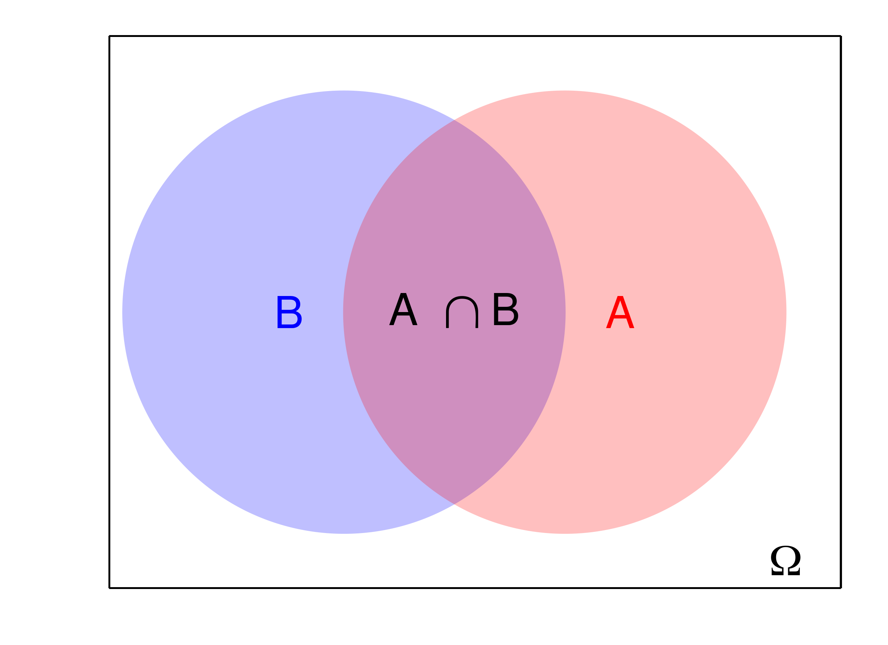

Explicando probabilidade condicional e o Teorema de Bayes.
Neste texto,vamos ver algumas das propriedades das probabilidades começando com probabilidade condicional, e, em seguida, vamos apresentar o Teorema da Probabilidade Total e o Teorema de Bayes.
Probabilidade condicional
Suponha que um camarada descobriu que o resultado do fenômeno aleatório está dentro do evento \(B\), e ele quer saber a probabilidade de um elemento do evento \(A\) ser resultado do fenômeno aleatório. Para não ficar repetindo a frase ser resultado do fenômeno aleatório, vamos simplificar: se um elemento do evento \(A\) for resultado do fenômeno aleatório, vamos falar que o evento \(A\) aconteceu (ou acontece). Neste contexto, a única forma do evento \(A\) acontecer é o resultado do fenômeno estar em \(A\) e \(B\) simultaneamente \((A \cap B)\), conforme ilustrado na Figura 1.

Imagine que estamos no contexto em que podemos aplicar o princípio da equiprobabilidade. Considere que o evento \(B\) tem \(n_1\) elementos e que o evento \(A \cap B\) tem \(n_2\) elementos. Além disso, assuma que o espaço amostral tem \(N\) elementos. Note que \(n_2 \leq n_1\). Então, temos \(n_1\) resultados possíveis do fenômeno aleatório (sabemos que \(B\) acontece), e a probabilidade de \(A\) acontecer (sabendo que \(B\) acontece) é dada por \[ \begin{split} \frac{n_2}{n_1}, \end{split} \] Note que \(\frac{n_2}{n_1} = \frac{N}{N}\cdot \frac{n_2}{n_1} = \frac{\frac{n_2}{N}}{\frac{n_1}{N}}\). Observe que estamos no princípio da equiprobabilidade, então \(P(A \cap B) = \frac{n_2}{N}\) e \(P(B) = \frac{n_1}{N}\). Consequentemente, concluímos que a probabilidade de \(A\) acontecer, se sabemos que \(B\) acontece, é dada por \[ \frac{P(A \cap B)}{P(B)}. \]
Chamamos a probabilidade de \(A\) acontecer sabendo que \(B\) acontece de probabilidade condicional, e em Estatística, resumimos a sentença a probabilidade de \(A\) acontecer sabendo que \(B\) acontece por probabilidade de \(A\) dado \(B\). Usamos a seguinte notação matemática para a probabilidade de \(A\) dado \(B\): \(P(A \mid B)\).
Não precisamos nos restringir ao contexto em que podemos aplicar o princípio da equiprobabilidade, e definimos a probabilidade de \(A\) dado \(B\) por:
- \(P(A \mid B) = \frac{P(A \cap B)}{P(B)}\), se \(P(B) > 0\);
- Por convenção e conveniência, estabelecemos que \(P(A \mid B) = P(A)\) se \(P(B) = 0\).
Com esta definição de probabilidade condicional, temos a seguinte propriedade chamada de regra do produto:
- \(P(A \cap B) = P(A \mid B) P(B)\);
- \(P(A \cap B) = P(B \mid A) P(A)\).
Vamos ilustrar as ideias de probabilidade condicional com um exemplo. Imagine cinquenta estudantes distribuídos em duas turmas (Turma \(A\) e Turma \(B\)) conforme a tabela abaixo, e queremos escolhê-los por sorteio para formar uma comissão de estudantes.
| Gênero | Turma A | Turma B | Total |
|---|---|---|---|
| Masculino | 21 | 16 | 37 |
| Feminino | 5 | 6 | 13 |
| Total | 26 | 24 | 50 |
Vamos especificar alguns eventos que usaremos em nossa notação matemática. Lembre-se que usamos as letras maiúsculas do alfabeto latino para representar eventos.
- \(A = \\{\mbox{estudante da turma A}\\}\);
- \(B = \\{\mbox{estudante da turma B}\\}\);
- \(M = \\{\mbox{estudante se identifica com gênero masculino}\\}\);
- \(F = \\{\mbox{estudante se identifica com gênero feminino}\\}\).
Imagine que queremos escolher por sorteio uma aluna para participar de uma comissão. Neste contexto, sabemos que a pessoa selecionada entre os alunos se identificará com o gênero feminino, e temos \(13\) pessoas que se identificam com o gênero feminino. Entre estudantes que se identificam com o gênero feminino, \(5\) são da turma \(A\). Então, a probabilidade da aluna ser da turma \(A\) é dada por \[ P(A \mid F) = \frac{5}{13} = 0,38. \]
Se usarmos a definição de probabilidade condicional, vamos chegar no exato mesmo valor \(0,38\). De fato, vamos calcular a probabilidade de \(A \cap F\) e \(F\) usando o princípio da equiprobabilidade, e, depois, usaremos a definição de probabilidade condicional para calcular \(P(A \mid F)\): \[ \begin{split} P(A \cap F) &= \frac{5}{50} = 0,1;\newline P(F) &= \frac{13}{50} = 0,26;\newline P(A \mid F) &= \frac{P(A \cap F)}{P(F)} = \frac{0,1}{0,26} = 0,38. \end{split} \]
Teorema da probabilidade total
A partir de agora, vamos fazer algumas mágicas interessantes usando probabilidade condicional. Imagine que o espaço amostral pode ser dividido em algumas partes \(C_1, \dots, C_n\), conforme ilustrado na Figura 2 onde dividimos o espaço amostral em quatro partes.

A probabilidade do evento \(A\) é a área do quadrado indicada pelo círculo preenchido com a cor azul. Para calcular a probabilidade do evento indicado pelo círculo \(A\), podemos calcular as probabilidades por partes deste círculo
- \(P(A \cap C_1)\);
- \(P(A \cap C_2)\);
- \(P(A \cap C_3)\);
- \(P(A \cap C_4)\);
e depois somar essas probabilidades para obter a probabilidade do círculo \[ P(A) = P(A \cap C_1) + P(A \cap C_2) + P(A \cap C_3) + P(A \cap C_4), \] e, então, usando a regra do produto em \(P(A \cap C_1)\), \(P(A \cap C_2)\), \(P(A \cap C_3)\) e \(P(A \cap C_4)\) temos que \[ P(A) = P(A \mid C_1) P(C_1) + P(A \mid C_2) P(C_2) + P(A \mid C_3) P(C_3) + P(A \mid C_4) P(C_4). \] Chamamos a coleção dos conjuntos \(C_1, \cdots, C_4\) de partição do espaço amostral.
Agora vamos enunciar o Teorema de Probabilidade Total de uma forma geral. Suponha que temos uma participação \(C_1, \cdots, C_n\) do espaço amostral e imagine que queremos calcular a probabilidade do evento \(A\). Além disso, imagine que conhecemos as probabilidades:
- Probabilidade do evento \(C_1\): \(P(C_1)\);
- Probabilidade do evento \(A\) dado \(C_1\): \(P(A \mid C_1)\);
- Probabilidade do evento \(C_2\): \(P(C_2)\);
- Probabilidade do evento \(A\) dado \(C_2\): \(P(A \mid C_2)\);
- Probabilidade do evento \(C_3\): \(P(C_3)\);
- Probabilidade do evento \(A\) dado \(C_3\): \(P(A \mid C_3)\);
\[ \vdots \]
- Probabilidade do evento \(C_n\): \(P(C_n)\);
- Probabilidade do evento \(A\) dado \(C_n\): \(P(A \mid C_n)\);
Então, podemos calcular a probabilidade do evento \(A\) através da seguinte equação \[ P(A) = P(A \mid C_1) P(C_1) + P(A \mid C_2) P(C_2) + \cdots + P(A \mid C_n) P(C_n). \]
Vamos considerar um exemplo simples para ilustrar o uso do Teorema da Probabilidade Total. Imagine que um produtor artesanal de sorvete compra leite de três fazendas: fazenda pequena, fazenda média e fazenda grande. 20% de todo o leite usado por este produtor vem da fazenda pequena, 30% de todo o leite usado por este produtor vem da fazenda média e 50% de todo o leite usado por este produtor vem da fazenda grande. Uma inspenção surpresa da Ministério da Agricultura, Pecuária e Abastecimento (MAPA) descobriu que 10% do leite vendido pela fazenda pequena estava adulterado, 30% do leite vendido pela fazenda média estava adulterado e 20% do leite vendido pela fazenda grande estava adulterado. E agora vem a pergunta: quanto leite adulterado este pequeno produtor artesanal de sorvete comprou destas fazendas?
Primeiro vamos definir alguns eventos: \[ \begin{split} A &= \{\mbox{Galão adulterado}\};\newline P &= \{\mbox{Galão produzido pela fazenda pequena}\};\newline M &= \{\mbox{Galão produzido pela fazenda média}\};\newline G &= \{\mbox{Galão produzido pela fazenda grande}\}; \end{split} \] e sabemos que (usamos as informações do MAPA e do produtor artesanal)
| \(P(A \mid P) = 0,1;\) | \(P(P) = 0,2\) |
| \(P(A \mid M) = 0,3;\) | \(P(M) = 0,3\) |
| \(P(A \mid G) = 0,2;\) | \(P(G) = 0,5\) |
então, usando o Teorema de Probabilidade Total, a proporção (ou probabilidade) de galões adulterados comprados pelo pequeno produtor artesanal de sorvete é dada por \[ \begin{split} P(A) &= P(A \mid P) P(P) + P(A \mid M) P(M) + P(A \mid G) P(G),\newline &= 0,1 \cdot 0,2 + 0,3 \cdot 0,3 + 0,2 \cdot 0,5, \newline &= 0,21. \end{split} \]
Teorema de Bayes
Finalmente, e não menos importante, temos o Teorema de Bayes, que foi descoberto pelo pastor presbiteriano Thomas Bayes. Apesar de matematicamente simples, as implicações e aplicações do Teorema de Bayes são extremamente relevantes para a Probabilidade, Estatística e o conhecimento científico como um todo. O Teorema de Bayes nos permite atualizar a probabilidade ou crença de que um evento \(A\) será o resultado de um fenômeno aleatório ao coletarmos ou descobrirmos novas informações ou evidências sobre o fenômeno aleatório.

Vamos considerar um exemplo. Imagine que a prevalência de um doença, que denotaremos por \(D_1\), no Brasil é \(20\\%\). Ou seja, sem examinar um paciente, um médico estima que este paciente tem a doencça \(D_1\) com probabilidade \(0,2\).
Na consulta médica, o paciente descreveu o sintoma \(S\). Da literatura especilizada em medicina, o médico sabe que este sintoma está presente em apenas três doenças: \(D_1\), \(D_2\) e \(D_3\). Além disso, o médico sabe que
- a probabilidade de um paciente com a doença \(D_1\) apresentar o sintoma \(S\) é \(20\\%\), ou seja, \(P(S \mid D_1) = 0,2\);
- a probabilidade de um paciente com a doença \(D_2\) apresentar o sintoma \(S\) é \(40\\%\), ou seja, \(P(S \mid D_2) = 0,4\);
- a probabilidade de um paciente com a doença \(D_3\) apresentar o sintoma \(S\) é \(15\\%\), ou seja, \(P(S \mid D_3) = 0,15\).
No website do Ministério da Saúde, o médico verificou que a prevalência das doenças \(D_2\) e \(D_3\) no Brasil são: \(P(D_2) = 0,4\) e \(P(D_3) = 0,15\).
Agora vem a pergunta mais importante: após o médico descobrir que o paciente tem o sintoma \(S\), qual é a probabilidade do paciente ter a doença \(D_1\)? Lembre que antes da consulta, o médico diria que a probabilidade deste paciente ter a doença \(D_1\) é \(20\\%\). Ou seja, queremos calcular a seguinte probabilidade \[ \begin{split} P(D_1 \mid S), \end{split} \] usando a definição de probabilidade condicional e a regra do produto temos que \[ \begin{split} P(D_1 \mid S) &= \frac{P(D_1 \cap S)}{P(S)},\newline &= \frac{P(D_1) P(S \mid D_1)}{P(S)}, \end{split} \] e para calcular \(P(S)\) usamos o Teorema da Probabilidade Total \[ \begin{split} P(D_1 \mid S) &= \frac{P(D_1) P(S \mid D_1)}{P(S)}, \newline &= \frac{P(D_1) P(S \mid D_1)}{P(D_1) P(S \mid D_1) + P(D_2) P(S \mid D_2) + P(D_3) P(S \mid D_3)}, \newline &= \frac{0,2 \cdot 0,2}{0,2 \cdot 0,2 + 0,4 \cdot 0,4 + 0,4 \cdot 0,15},\newline &\approx 0,02 \end{split} \]
Ou seja, ao descobrir que o paciente tem o sintoma \(S\), o médico mudou atualizou a probabilidade do paciente ter a doença \(D_1\) de \(20\\%\) para \(2\\%\).
Agora vamos enunciar o Teorema de Bayes de uma forma geral. Suponha que temos uma participação \(C_1, \dots, C_n\) do espaço amostral e considere o evento de interesse \(A\). Além disso, imagine que conhecemos as probabilidades:
- probabilidade do evento \(C_1\): \(P(C_1)\);
- probabilidade do evento \(A\) dado \(C_1\): \(P(A \mid C_1)\);
- probabilidade do evento \(C_2\): \(P(C_2)\);
- probabilidade do evento \(A\) dado \(C_2\): \(P(A \mid C_2)\);
- probabilidade do evento \(C_3\): \(P(C_3)\);
- probabilidade do evento \(A\) dado \(C_3\): \(P(A \mid C_3)\); \[ \vdots \]
- probabilidade do evento \(C_n\): \(P(C_n)\);
- probabilidade do evento \(A\) dado \(C_n\): \(P(A \mid C_n)\);
Então, as probabilidades dos eventos \(C_i, i=1, \dots, n\) acontecerem dado que sabemos ou observamos o evento \(A\) é dada por \[ \begin{split} P(C_1 \mid A) &= \frac{P(C_1) P(A \mid C_1)}{P(C_1) P(A \mid C_1) + \cdots + P(C_n) P(A \mid C_n)}, \newline P(C_2 \mid A) &= \frac{P(C_2) P(A \mid C_2)}{P(C_1) P(A \mid C_1) + \cdots + P(C_n) P(A \mid C_n)}, \newline &\vdots \newline P(C_n \mid A) &= \frac{P(C_n) P(A \mid C_n)}{P(C_1) P(A \mid C_1) + \cdots + P(C_n1) P(A \mid C_n)}.\newline \end{split} \]
Vamos fazer mais um exemplo para ilustração. Imagine que uma planta industrial tem três linhas de produção, \(L_1, L_2, L_3\), que produzem lotes de um mesmo equipamento eletrônico. Um lote é considerado inadequado para venda se mais de \(10\\%\) dos equipamentos eletrônicos deste lote forem defeituosos. Considere os seguintes eventos
- \(L_1 = \\{\mbox{lote vem da linha de produção } L_1 \\}\)
- \(L_2 = \\{\mbox{lote vem da linha de produção }L_2 \\}\)
- \(L_3 = \\{\mbox{lote vem da linha de produção }L_3 \\}\)
- \(D = \\{\mbox{mais de }10\% \mbox{ equipamentos do lote são defeituosos} \\}\)
Os engenheiros que construíram estas três linhas afirmam que:
- a probabilidade da linha de produção \(L_1\) produzir um lote com mais de \(10\\%\) dos equipamentos defeituosos é \(35\\%\), ou seja, \(P(D \mid L_1) = 0,35\);
- a probabilidade da linha de produção \(L_2\) produzir um lote com mais de \(10\\%\) dos equipamentos defeituosos é \(40\\%\), ou seja, \(P(D \mid L_2) = 0,4\);
- a probabilidade da linha de produção \(L_3\) produzir um lote com mais de \(10\\%\) dos equipamentos defeituosos é \(32,5\\%\), ou seja, \(P(D \mid L_3) = 0,325\);
- \(50\\%\) dos lotes desta planta industrial são produzidos pela linha de produção \(L_1\), ou seja, \(P(L_1) = 0,5\);
- \(30\\%\) dos lotes desta planta industrial são produzidos pela linha de produção \(L_2\), ou seja, \(P(L_2) = 0,3\);
- \(20\\%\) dos lotes desta planta industrial são produzidos pela linha de produção \(L_3\), ou seja, \(P(L_3) = 0,2\).
A equipe do controle de qualidade identificou um lote inadequado, e os engenheiros da planta industrial precisam fazer ajustes nas linhas de produção. A melhor estratégia é começar as análises e ajustes na linha de produção com a maior probabilidade de te ter produzido o lote inadequado. Então, vamos usar o Teorema de Bayes para calcular \(P(L_1 \mid D), P(L_2 \mid D)\) e \(P(L_3 \mid D)\):
\[ \begin{split} P(L_1 \mid D) &= \frac{P(L_1) P(D \mid L_1)}{P(D)}\newline &= \frac{P(L_1) P(D \mid L_1)}{P(L_1) P(D \mid L_1) + P(L_1) P(D \mid L_1) + P(L_3) P(D \mid L_3)}\newline &= \frac{0,35 \cdot 0,5}{0,35 \cdot 0,5 + 0,4 \cdot 0,3 + 0,2 \cdot 0,325}\newline &= 0,49\newline P(L_2 \mid D) &= \frac{P(L_2) P(D \mid L_2)}{P(D)}\newline &= \frac{P(L_2) P(D \mid L_2)}{P(L_1) P(D \mid L_1) + P(L_1) P(D \mid L_1) + P(L_3) P(D \mid L_3)}\newline &= \frac{0,4 \cdot 0,3}{0,35 \cdot 0,5 + 0,4 \cdot 0,3 + 0,2 \cdot 0,325}\newline &= 0,33\newline P(L_3 \mid D) &= \frac{P(L_3) P(D \mid L_3)}{P(D)}\newline &= \frac{P(L_3) P(D \mid L_3)}{P(L_1) P(D \mid L_1) + P(L_1) P(D \mid L_1) + P(L_3) P(D \mid L_3)}\newline &= \frac{0,2 \cdot 0,325}{0,35 \cdot 0,5 + 0,4 \cdot 0,3 + 0,2 \cdot 0,325}\newline &= 0,18 \end{split} \]
Ou seja, a linha de produção com maior probabilidade de ter produzido o lote inaquedo é a linha de produção \(L_1\), \(P(L_1 \mid D) = 0,49\), e os engenheiros deveriam começar a análise nesta linha de produção.
© 2024 R para Ciência de Dados
🖤 by Carolina Paraíba e Gilberto Sassi